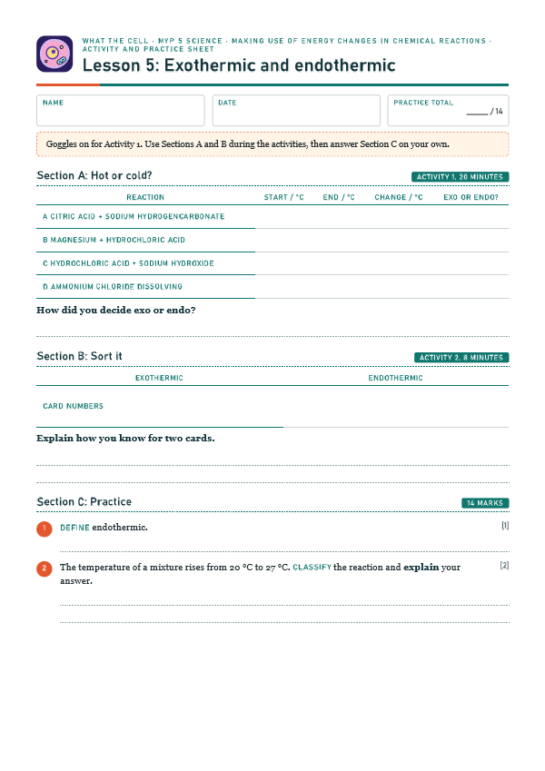

By the end of the lesson you can
- Define exothermic and endothermic changes
- Classify reactions from temperature changes
- Draw and label reaction profiles
- Explain activation energy
Keys: arrows or a presentation clicker move the slides, F for full screen. Slides with a red dot have a video or simulation.
Videos (all 5 minutes or less)
- 4:17
Endothermic and exothermic reactions
FuseSchool. What happens to the surroundings in each type of reaction, with examples. Slide 8.
Simulations
- Lab
Energy Changes Lab: reaction profiles
What the Cell. Sort reactions into exothermic and endothermic, read the thermometer and add a catalyst to see what changes.
Print and practise

Activity and practice sheet
Used in the lesson’s activities, with practice questions. Your teacher has the answers.
Download (PDF)Lesson 5 slides
All 23 slides in one file, to read again or print. The video buttons on the slides open YouTube.
Download the slides (PDF)Revising? The Revision tab on the unit page has the unit notes and review.
Notes: Exothermic and endothermic
System and surroundings
The system is the reacting chemicals; the surroundings are everything else: the water, the cup, the air and your hand. Energy moves between them. A thermometer measures the surroundings.
Exothermic
An exothermic change transfers energy to the surroundings, so they get hotter. ΔH is negative. Examples: combustion, neutralisation, respiration, metals with acids, displacement.
Endothermic
An endothermic change takes in energy from the surroundings, so they get colder (or energy must be supplied). ΔH is positive. Examples: thermal decomposition, photosynthesis, citric acid with sodium hydrogencarbonate, dissolving ammonium salts.
Reaction profiles
A reaction profile plots energy against the progress of the reaction. Exothermic: products lower than reactants. Endothermic: products higher. Label the axes, reactants, products, activation energy and ΔH.
Activation energy
The minimum energy needed to start a reaction, shown by the hump on the profile. A match needs a strike to supply it. A catalyst lowers the activation energy but does not change ΔH.
Changes of state
Melting, boiling and subliming are endothermic; freezing, condensing and depositing are exothermic. They are physical changes, but energy still moves.
Key words
| exothermic | transfers energy to the surroundings; temperature rises; ΔH negative |
|---|---|
| endothermic | takes in energy from the surroundings; temperature falls; ΔH positive |
| system / surroundings | the reacting chemicals / everything around them |
| reaction profile | a diagram of energy against progress of the reaction |
| activation energy (Ea) | the minimum energy needed to start a reaction |
| catalyst | speeds up a reaction by lowering Ea; not used up |